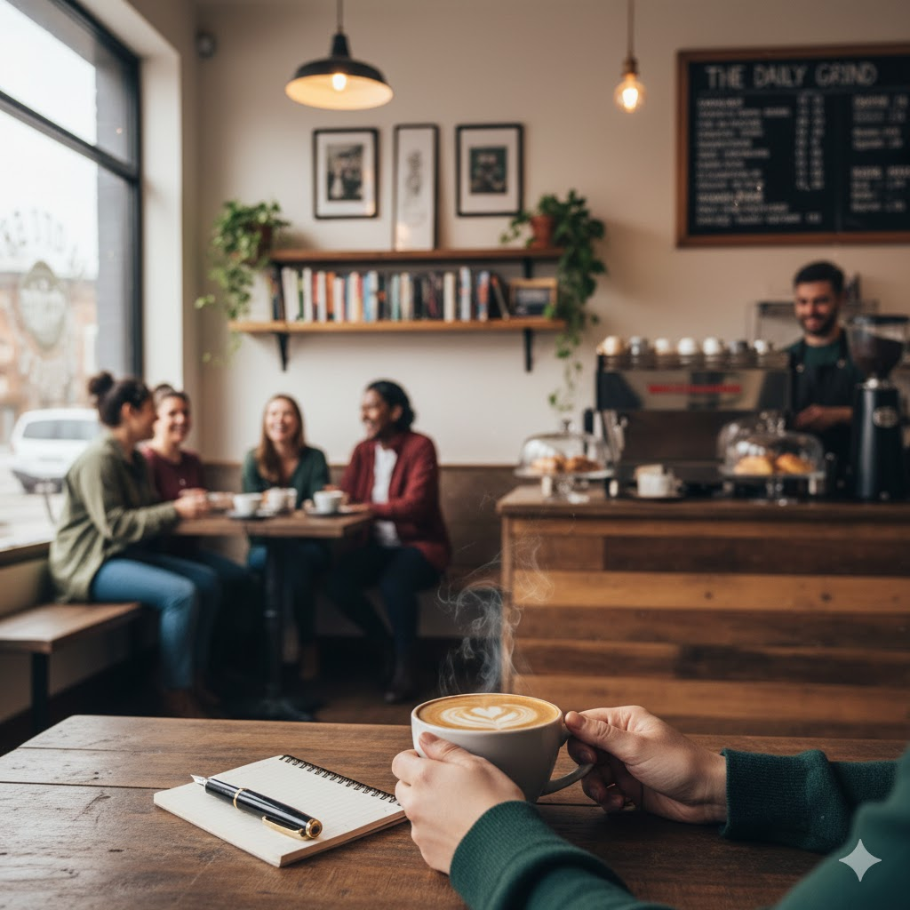

Welcome to The Daily Grind.
What started as a small dream among a group of passionate IT students has grown into a community hub for creators, thinkers, and everyday dreamers. The Daily Grind is more than just a coffee shop — it’s a space built on inspiration, collaboration, and the love of a good cup of coffee.
Each brew represents our belief that great ideas often begin with a sip — whether you’re studying, designing, writing, or simply taking a break from the chaos of the day.